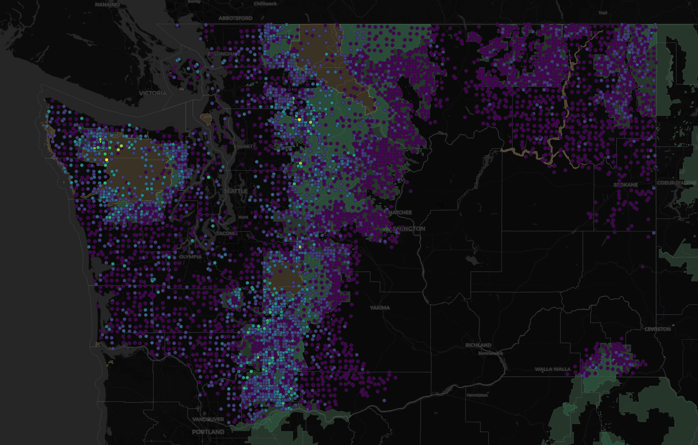
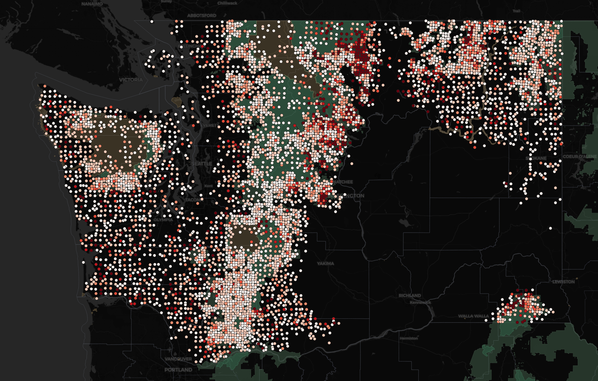
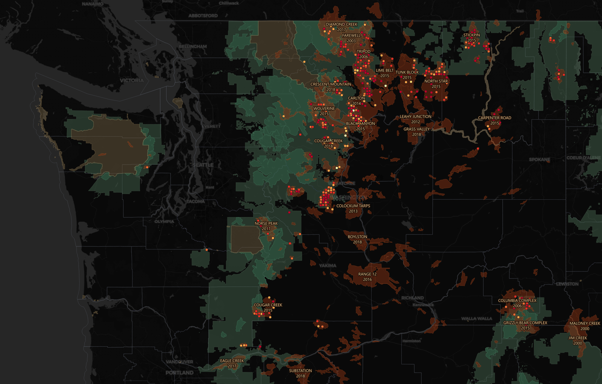
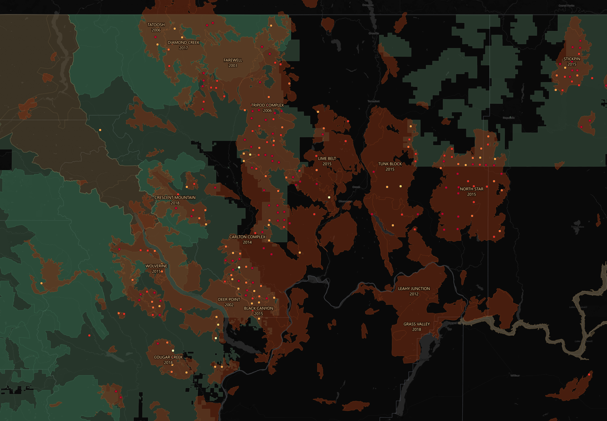

Two days, one warehouse, and what the federal forest inventory says about Washington when you finally ask it properly.
I have been making maps for years and databases for almost as long, and somewhere in there I developed a habit I am not proud of: I would pull data, wrangle it in Python, write out a JSON file, and push it to a static site. It worked. It still works — half my projects run that way and they run without me touching them all summer.
But it is a script that computes and writes and hopes. There is nothing in it that tells you when you are wrong.
So I spent a weekend learning two tools I had read about and never touched — Snowflake and dbt — by pointing them at data I actually care about. Rivers first. Then, when the rivers ran out of things to say, forests.
This is what came out.
The pile
By the end of it the warehouse held six different shapes of data, which was the point. I did not want one clean dataset. I wanted the mess that real platforms have to swallow.
Alpine lake chemistry, sampled by hand a few times a year. Streamgage telemetry every fifteen minutes. Thirty-six years of daily river flow. A stream network I derived myself from LiDAR. Then the big one: the Forest Inventory and Analysis database — the federal program that has been sending crews into the woods with calipers since Congress mandated it in 1928.
FIA is a strange and wonderful thing. Real people walk to a fixed point in the forest and measure every tree: species, diameter, height, whether it is alive. They come back a decade later and do it again. For Washington that is 531,490 tree measurements across 23,099 plots, going back to 2001.
Where the wood is

The first thing the data does is draw Washington's geography without being asked. That bright band down the west slope of the Cascades and out across the Olympics is the wet forest — Douglas-fir, western hemlock, western redcedar, growing in a place that gets rain. East of the crest it falls off a cliff.
Then ownership turned out to be the more interesting cut.
| Who owns it | Plots | Live biomass (tons/acre) | Old-growth plots |
|---|---|---|---|
| Other federal (mostly parks) | 427 | 146.9 | 211 |
| State & local | 1,267 | 92.2 | 92 |
| Forest Service | 7,283 | 91.3 | 1,942 |
| Private | 3,830 | 54.6 | 107 |
National park land carries 2.7 times the standing wood per acre that private timberland does. Not because it grows better. Because nothing has ever been taken off it.
The old-growth column is the whole story in one number. Forest Service: 1,942 plots older than 150 years. Private: 107. Industrial timberland never gets there — it is harvested at forty or fifty and planted again. Two entirely different objectives, and you can see both of them in a single GROUP BY.
Where it dies

About one tree in five in Washington is standing dead, which sounds alarming until you learn that FIA counts snags on purpose — dead wood is real forest structure and real habitat. The interesting part is which trees.
| Species | Where | Trees | Dead |
|---|---|---|---|
| whitebark pine | Subalpine | 2,440 | 57.9% |
| western white pine | Upper montane | 1,466 | 45.2% |
| lodgepole pine | Subalpine | 17,177 | 45.0% |
| Engelmann spruce | Subalpine | 5,787 | 40.9% |
| Douglas-fir | all | 161,839 | 21.3% |
| western redcedar | all | 29,456 | 14.2% |
Those top two are not a coincidence. Whitebark and western white pine are both five-needle pines, and both are susceptible to white pine blister rust — a fungus that arrived from Europe over a century ago and has been working through their family ever since. Add mountain pine beetle and a hundred years of fire suppression and you get 58% mortality.
Whitebark pine was listed as federally threatened in 2022. I did not know that when I ran the query. The data told me there was something wrong with that species before I went looking for why.
The bottom of the table is just as honest. Western redcedar at 14%. Alaska yellow-cedar at 12%. Pacific yew at 11%. Rot-resistant, long-lived, and they simply stand there.
And the reassuring one, if you happen to run a timber company: Douglas-fir, 161,839 trees, sitting at 21.3% — dead average. Boring. An entire regional industry depends on that number staying boring.
Then I added fire

Here is the thing I had not appreciated until the two maps were sitting on top of each other:
Washington's best timber ground and its worst fire ground are largely different places. The high-biomass west slope rarely burns. The east side burns hard and carries a fraction of the wood.
Zoom into Okanogan County and it stops being a pattern and starts being a scar.

The measurement that actually worked
I had tried this before with rivers and failed. The idea was simple — find a big fire, compare streamflow before and after. But every gage inside the burn had been decommissioned years before the fire happened. The instruments were gone.
Forest plots do not have that problem. FIA revisits on a schedule regardless of what happens to the plot. Burn it to the ground and a crew still shows up a decade later to measure what is left.
Which means a plot that burned in 2014 and got remeasured in 2019 carries its own before-picture. No control group needed. Each plot is its own control.
A megafire takes about two-thirds of the standing live wood and leaves three of every four stems dead. That is not a model. That is 203 identified plots, measured before, measured after.
Where I was wrong
I want to be straight about this part, because it is the actual reason I bothered learning any of this.
Over two days I made six confident predictions. Five were wrong.
I said Sierra rivers should peak in the evening as snowmelt travelled downstream. They peak in the morning — because streamside trees pull water out of the ground all day while they photosynthesize, and the river only recovers overnight. The trees are breathing and you can see it in the discharge record.
I said reservoir-controlled reaches would be flashy. They are the smoothest water in the dataset; a dam is a shock absorber.
I said small watersheds would be flashier than big ones. The correlation was −0.60 and looked textbook, right up until I dropped a single outlier creek and it collapsed to −0.24. One data point was carrying the whole finding.
I said fire damage should scale with fire size. It does — but in mortality, not biomass, and I had been reading the wrong column.
And twice the data lied quietly
A float conversion appended .0 to 157,871 identifiers. Nothing errored. Nothing warned. The join simply returned zero rows and the model built successfully with nothing in it.
Then a percentage came back saying burned plots had gained 12.4% biomass, on ground where 71% of the stems were dead. That one was averaging ratios instead of taking a ratio of totals — a handful of near-empty plots with tiny denominators flipped the sign on 185 plots' worth of real destruction. The correct number was −62.3%.
Neither of those looked broken. Both produced numbers you could put in a slide deck.
What caught them was not cleverness. It was that the metrics were already modeled, already tested, and the next question was one query away — so checking cost thirty seconds instead of an afternoon. And it was knowing enough about forests to look at a number and think that cannot be right.
What I actually learned
The tools were the excuse. What I got instead was a working understanding of when to reach for them:
Separate storage from compute and you stop making tradeoffs between the two. The warehouse suspends sixty seconds after I stop typing. Two days of this cost approximately nothing.
Not everything should be JSON. API feeds with schemas I do not control go in as semi-structured. A documented federal CSV goes in as typed columns — 531,490 rows and 198 columns compressed to under ten megabytes because I chose correctly.
Transformations should be software. Version-controlled, dependency-ordered, and tested. Seventy-three automated tests, and they earned it — they caught duplicate lab records, wrong unit casing, a whole unit family I had never heard of, and a join key pointed at the wrong column.
But the real lesson is smaller and older than any of that. Build the thing that argues back. A script gives you an answer. A modeled, tested warehouse gives you an answer and a fighting chance of noticing when the answer is nonsense.
Five wrong guesses in two days is not a bad weekend. It is the job.
Data: USDA Forest Service Forest Inventory and Analysis; USGS Water Data; NIFC InterAgencyFirePerimeterHistory; USFS and NPS boundaries. Maps built in QGIS. A caveat worth stating: FIA publishes plot coordinates fuzzed up to about a mile to protect landowner privacy, so everything here is honest at regional scale and unreliable at the parcel level. The fire perimeter record also under-represents state and private land and thins after 2019 — absence of a fire in that dataset does not mean the ground never burned.
· · ·